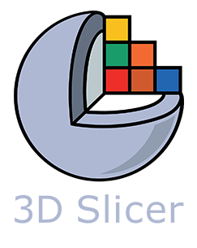

trame-slicer
Python library for medical imaging on the web
What is trame-slicer?
What is trame-slicer?
A composable library of 3D Slicer components available in trame
What is trame-slicer?
A composable library of 3D Slicer components available in trame
3D Slicer core as a standalone wheel
Bridge between 3D Slicer components and trame
Pythonic facade to ease usage

Features
Rendering
Views
3D views
2D/Slice views
Any other view types (e.g. plotly)
Layouts
Conventional, four-up, side-by-side
Fullscreen mode
Any custom layout
Rendering
Views
3D views
Volume Rendering
Color Preset
Crop
2D/Slice views
Any other view types (e.g. plotly)
Layouts
Conventional, four-up, side-by-side
Fullscreen mode
Any custom layout
Rendering
Views
3D views
2D/Slice views
Scroll, Zoom, Pan
Window Leveling (W/L)
Multiplanar Reformation (MPR)
Slice/Slab thickness (MIP, MinIP, AverageIP)
Any other view types (e.g. plotly)
Layouts
Conventional, four-up, side-by-side
Fullscreen mode
Any custom layout
I/O
DICOM
MRI, CT, US, XR, PET, DWI...
Scalar volumes
nrrd, nii, tiff, hdr, img, mha, ...
Segmentation
seg.nrrd, .nrrd, seg.nhdr, .nhdr, .nii, .nii.gz, .hdr, ...
Models
obj, sstl, vtk, vtp, ...
Scene
mrml, mrb
Segmentation
Paint
Erase
Scissors
Islands
Threshold
Masking
Boolean operations
Undo / Redo
Markups
Points / Fiducials
Ruler
Angle
Open curve
Closed curve
Plane
ROI
And many more...
Easily connect with
And many more...
Easily connect with
Any Python libraries
Any JS libraries
Any CLI executables
And many more...
Easily connect with
Any Python libraries
Any JS libraries
Any CLI executables
Bring 3D Slicer extensions
And many more...
Easily connect with
Any Python libraries
Any JS libraries
Any CLI executables
Bring 3D Slicer extensions
by leveraging the SlicerCore-SDK
And many more...
Easily connect with
Any Python libraries
Any JS libraries
Any CLI executables
Bring 3D Slicer extensions
by leveraging the SlicerCore-SDK
Apply AI segmentation models
And many more...
Easily connect with
Any Python libraries
Any JS libraries
Any CLI executables
Bring 3D Slicer extensions
by leveraging the SlicerCore-SDK
Apply AI segmentation models
Total Segmentator
Dental Segmentator
...
https://github.com/KitwareMedical/trame-slicer
Get started today!